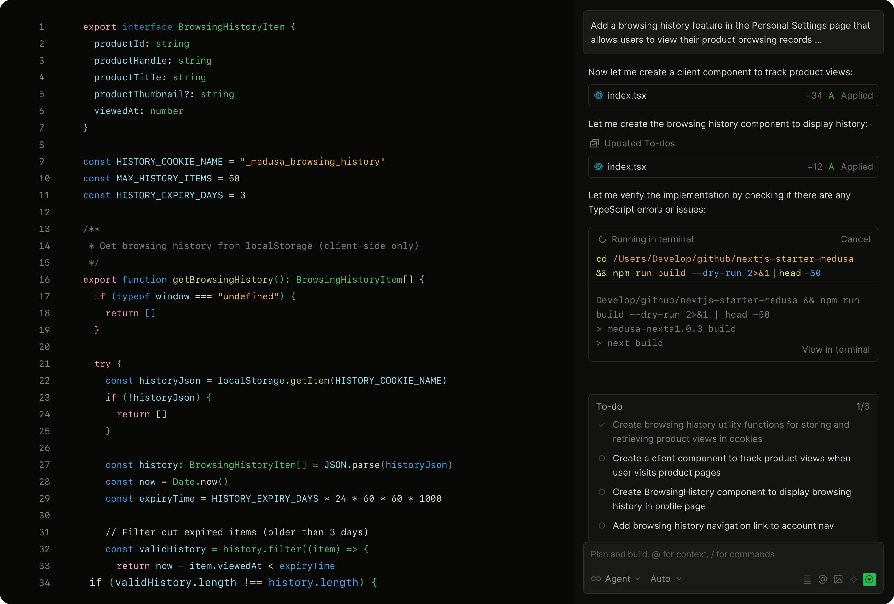
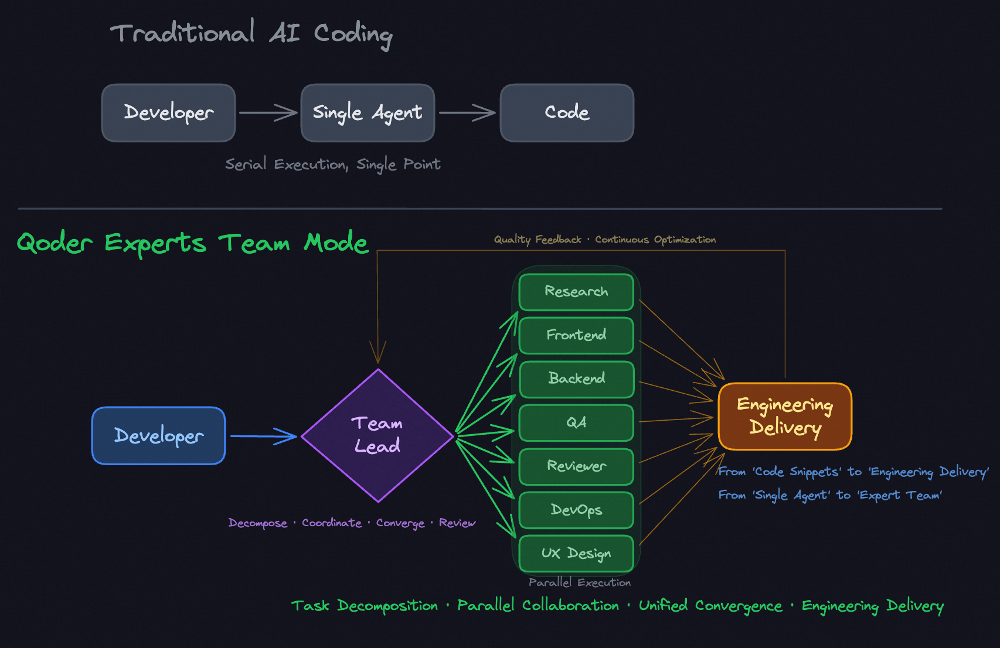
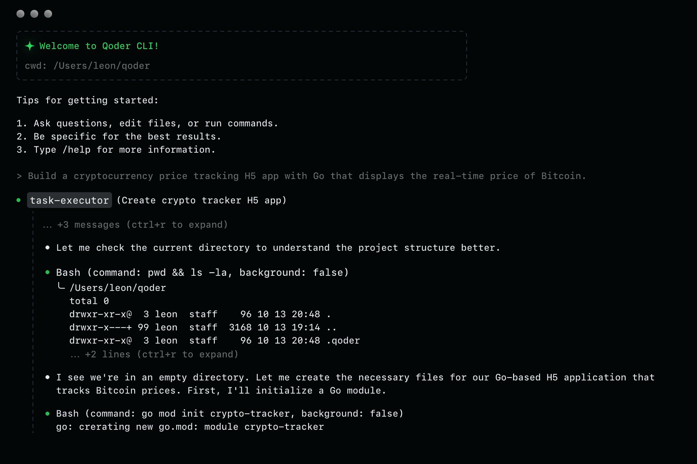

Qoder Product Overview
2.1 What is Qoder?
Qoder is an agentic coding platform (founded 2024, Alibaba ecosystem) positioning as an “Autonomous Development Desktop.” Beyond code completion, it provides a full platform integrating context engineering with intelligent agents — supporting multi-agent orchestration, autonomous task delegation, persistent knowledge, and extensible tool integration. Available as a standalone IDE, VS Code/JetBrains extensions, and a terminal CLI. 5M+ users globally, with 70% revenue from enterprise customers.
2.2 Product Surfaces
| Surface | Description | Platforms |
|---|---|---|
| Qoder IDE | AI-native standalone desktop IDE (VS Code-based) with Editor + Quest workspaces | Windows, macOS, Linux |
| VS Code Extension | Agentic features inside VS Code: Chat, Agent, Quest, NEXT, Experts | VS Code Marketplace |
| JetBrains Extension | Plugin for IntelliJ, PyCharm, GoLand, Android Studio, CLion (2020.3+) | JetBrains Marketplace |
| Qoder CLI | Terminal-based AI coding agent with headless mode for CI/CD (competes with Claude Code) | npm, Homebrew |
| Cloud Agents | API-driven agent sessions with environments, memory stores, vaults, and skills | REST API |
2.3 Core Features
Qoder’s feature set spans six pillars: an AI-native IDE editor, autonomous task delegation (Quest), multi-agent orchestration (Experts), persistent knowledge engineering, a terminal agent (CLI), and an extensible integration layer.
Qoder IDE — Editor & Agentic Chat
AI-Native IDE VS Code-basedThe primary coding workspace combining a full IDE with AI-powered agentic chat. The editor features NEXT (intent-aware code completion and Next Edit Suggestions) that predicts your next editing action based on code context and intent. The Agentic Chat panel provides conversational AI with task decomposition and autonomous execution — switch between Agent mode (autonomous multi-step) and Auto mode (inline assistance). Chat sessions are code-aware, with automatic file context from open tabs.

- NEXT completions: Intent-aware suggestions that go beyond autocomplete — predicts next edit actions
- Agentic Chat: Conversational AI with file-context awareness from open editor tabs
- Agent vs Auto mode: Toggle between autonomous multi-step execution and inline assistance
- Plan Agent: Breaks complex requests into structured plans before execution
- Browser Agent & Computer Use Agent: Control browsers and desktops directly from chat
- Inline Chat: Edit code in-place without leaving the editor cursor position
Quest Mode
Autonomous Delegation Spec-DrivenAn asynchronous, autonomous delegation workspace where you describe what to build and Qoder plans and executes independently. Two modes: Write Spec First (AI generates a technical specification you review before execution) and Execute Directly (skip spec, go straight to implementation). Quest provides a three-column kanban (Running / Waiting / Completed), a Plan and Action checklist for execution transparency, and detailed Task Reports showing file changes, test results, and completion status. Comparable to Claude Code’s headless mode but with richer visual task management.

- Spec-Driven: AI writes technical specs (Overview, Architecture, Components) before coding
- Plan and Action: Transparent checklist of planned steps with real-time progress
- Task Reports: Detailed logs of file changes, test results, and execution summary
- Three-column kanban: Running / Waiting / Completed task management
- Quest Remote: Manage Quest tasks from mobile or another device
- Execution Environments: Sandboxed cloud environments for autonomous builds
Experts Mode (Multi-Agent)
Centralized Orchestration DAG-basedA multi-agent collaboration system where a Team Lead agent decomposes tasks and assigns them to specialized expert roles running in parallel. Unlike single-agent coding, Experts Mode enables parallel execution across research, frontend, backend, QA, code review, and DevOps — converging into unified engineering delivery. Benchmarks show +67% quality improvement over single-agent approaches. The centralized orchestration model (Leader-routed) contrasts with Claude Code’s decentralized peer-to-peer Agent Teams.

- Experts Leader: Orchestrator that decomposes, assigns, and tracks — does NOT code itself
- Expert Team: Domain-specific agents (Research, Coding, QA, Code Review, Browser) with isolated toolsets
- Task Graph (DAG): Lightweight dependency-aware parallel scheduling
- Custom Sub-Agents: Define your own expert roles with specialized configurations
- Self-Evolution Loop: Complete → Extract → Store → Recall → Execute
- Canvas View: Visual artifact rendering for dashboards, reports, and architecture diagrams
Knowledge Engine
Context Engineering Persistent MemoryA three-layer context system that gives Qoder persistent understanding of your codebase across sessions. Repo Wiki auto-generates architecture documentation from your repository (surfacing implicit knowledge that’s usually undocumented). Knowledge Cards extract reusable specs, standards, and conventions from your code. Conversation Memory accumulates decisions, pitfalls, and patterns from chat history. Together, they eliminate the “cold start” problem where AI assistants forget everything between sessions.
- Repo Wiki: Auto-generated architecture docs (Project Overview, Technical Architecture, Core Components)
- Knowledge Cards: Extracted specs, coding standards, and domain conventions from codebase
- Conversation Memory: Accumulated decisions, pitfalls, and patterns from chat sessions
- Automatic Generation: Memories auto-build as you use Qoder — no manual curation required
- Memory References: AI automatically fetches relevant memories when executing tasks
- Cross-session persistence: Knowledge survives IDE restarts and team member changes
Qoder CLI
Terminal Agent CI/CD ReadyA terminal-native AI coding agent that brings Qoder’s agentic capabilities to the command line. Direct competitor to Claude Code — accepts natural language requests to read/write files, run commands, search codebases, and execute multi-step tasks. Features a headless mode for non-interactive CI/CD integration (GitHub Actions via qoder-action), and programmatic SDKs for TypeScript and Python. Uses 70% less idle memory than comparable CLI tools with sub-200ms response times.

- Natural language interface: Ask questions, edit files, or run commands in plain English
- Headless mode: Non-interactive execution for CI/CD pipelines and automation
- GitHub Actions:
qoder-actionfor automated PR reviews, code generation, and issue triage - TypeScript & Python SDKs: Programmatic agent integration (
@qoder-ai/qoder-agent-sdk) - Multi-provider model routing: Auto-selects optimal model (Qwen, DeepSeek, etc.)
- Skills support: Load SKILL.md files for domain-specific CLI expertise
Extensions & Integrations
Skills MCP PluginsThree extension mechanisms for customizing Qoder’s capabilities. Skills are reusable, modular domain expertise packaged as SKILL.md files — installable from the skills marketplace or GitHub. MCP (Model Context Protocol) connects Qoder to external tools and data sources (GitHub, Figma, Slack, and more) through a one-click install marketplace. Plugins extend IDE functionality with custom UI panels, commands, and integrations. Hooks allow custom shell commands to run in response to agent events.
- Skills: Packaged as
SKILL.md— install from marketplace or write your own - MCP Integration: One-click install for GitHub, Figma, Slack, Context7, and more
- Plugins: Extend IDE with custom panels, commands, and third-party integrations
- Hooks: Run custom shell commands on agent events (pre-commit, post-task, etc.)
- Sub-Agents: Define custom specialist agents for domain-specific workflows
- BYOK (Bring Your Own Key): Use your own API keys for model providers